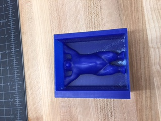
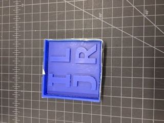

Week 8
This week the task was to learn about CNC milling and mill out a model out of wax.
However, because Mr. Gerber was visiting a school, we were not doing that until Thursday. For the first few days of the week, I UV printed a new phone case for my mom, and then printed out some vinyl sticker for Starcraft II.
For the MDX40A machine, we have to design a 3D stl model and mill it out in wax. Following Dr.Borrmann's instruction, I designed the 3D buddy bear model with flat back (to make good candies).
After a weekend's waiting, the job was finally done!!!!!!
Here is the photo of the 3D printed bear as a comparison.

You can see clearly that the subtractive milling is much smoother and more precise than 3D print.
Besides the bear, I also tried to print the Arsenal logo. Unfortunately the preview of that print is not very distinct (the gaps are too thin for the 1/16" ball to mill out smoothly).Thus I did a name tag for myself. ILJR stands for "I look just right", not a very inspirational quote but uplifting enough.
And the final product is this:
